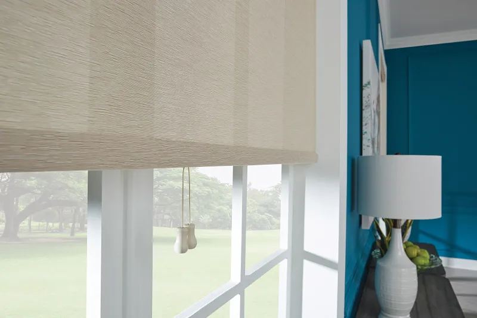
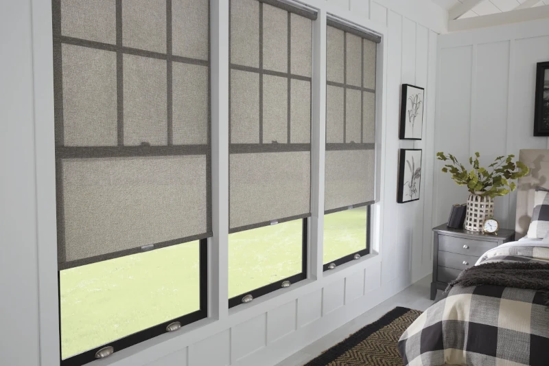
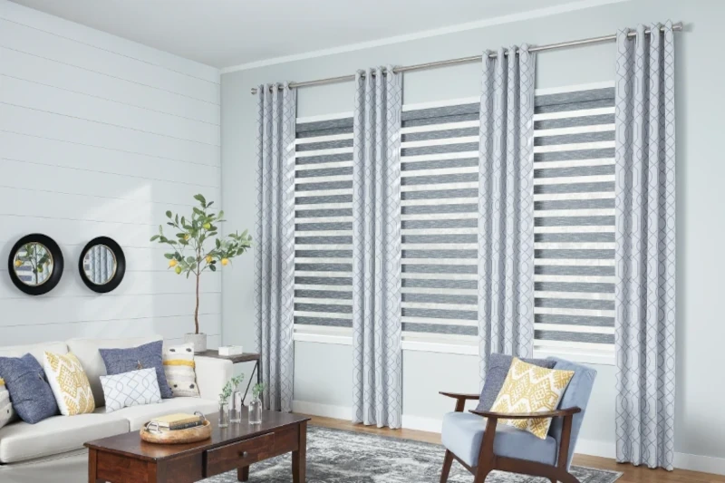
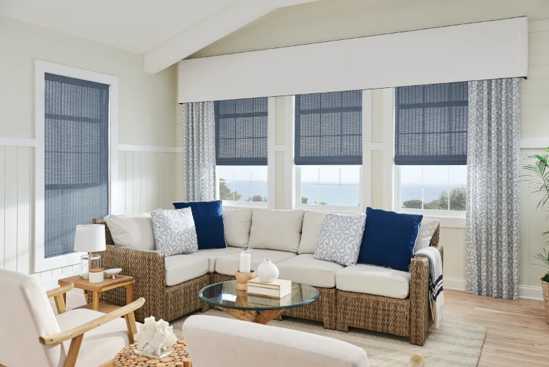
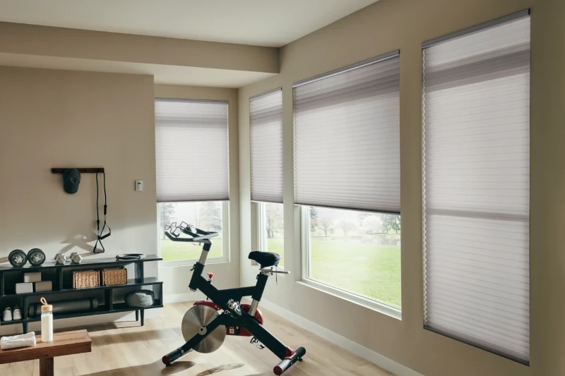
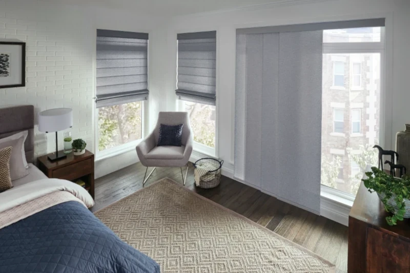
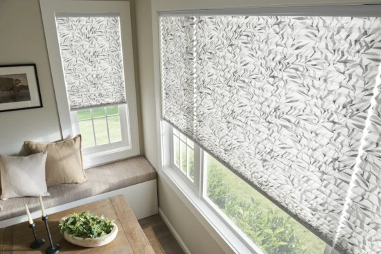

Custom Window Shades for Oklahoma City & Edmond Homes
What You'll Learn in This Article:
- ✓ The complete range of window shade styles—from roller and cellular to Roman shades and solar shades—and which works best for your home
- ✓ How different shade opacities control light, privacy, and UV protection for Oklahoma's intense sun
- ✓ Energy-saving benefits of premium shades and how they reduce cooling costs in Oklahoma City and Edmond homes
- ✓ Why custom-made shades deliver superior quality, perfect fit, and endless design options
Call Brent & Edna today at 405-259-5599
for your window shade questions.
Shaded In The Sun offers a variety of premium window shades from trusted brands like Graber and Norman® that blend form and function to increase comfort and convenience for every home. Choose from a wide selection of designs that offer privacy, precise light control, easy operation, and protection from excess heat, glare, and UV rays—in on-trend colors and materials. Learn more about how shade opacities work to find the perfect balance of light and privacy, or discover why energy-saving shades are essential for Oklahoma homes.
Roller Shades

Roller shades bring a clean, modern style in fresh, on-trend fabrics—from sheer to blackout.
- • Fits Any Window: Including extra-wide windows and sliding glass doors.
- • Fabric-Wrapped Valance: A cool, contemporary flat-valance option for a polished finish.
- • Whole-Home Coordination: Matching fabrics make it easy to carry the same clean look room to room.
Layered Shades

Layered shades (also known as zebra shades) offer a modern take on light control with alternating bands of sheer and opaque fabric.
- • Adjustable Light Control: Align the sheer layers to filter light, or close the opaque bands to block it.
- • Elegant, Modern Look: Clean lines with a distinctly contemporary feel.
- • Exclusive Textures: A range of prints, patterns, and textures to match any décor. Discover why zebra shades are Oklahoma City's trending window treatment choice.
Natural Shades

Naturally organic and beautifully handwoven, natural shades bring the colors and patterns of nature into any room.
- • Sustainable Materials: Crafted from jute, bamboo, wood, and grasses.
- • Casual Luxury: A unique, textured look that pairs smart design with an eco-friendly feel.
- • Versatile Style: Works equally well in relaxed and upscale settings.
Cellular Shades

Cellular shades are easy to use, highly durable, and energy efficient—with fabrics ranging from sheer to blackout.
- • Honeycomb Insulation: Traps air to help regulate indoor temperature year-round.
- • Functional Elegance: A refined look that works in nearly every room.
- • Sunroom-Ready: Perfect for cooling hot Oklahoma sunrooms while maintaining style.
Sliding Panels

Sliding panels are a sleek, modern, and versatile solution for wide windows and patio doors.
- • Wide-Opening Coverage: Built for patio doors and oversized windows standard shades can't cover.
- • Coordinated Fabrics: Choose a fabric shared with Roman, Natural, Roller, and Solar shade collections for a matched look.
- • Smooth Operation: Glides open and closed with minimal effort.
Pleated Shades

Pleated shades come in eye-catching colors and patterns, combining traditional shade function with a modern, crisp-pleat design.
- • Crisp, Even Pleats: A tailored look that works in nearly any room.
- • Fabric on Its Own: Clean and simple, with no added layers needed.
- • Optional Liners: Combine with a liner for added privacy and light control.
Solar Shades

Solar shades are perfect for Oklahoma City's intense summer sun, blocking heat and harmful UV rays while maintaining your view to the outdoors.
- • Superior Sun Protection: Lowers cooling costs and protects furniture from fading.
- • Flexible Openness Levels: A wide range of opacities, from 1% to 10% openness, plus expanded width options for extra-wide windows.
- • Motorized Options Available: Call 405-259-5599 for a free quote for your Edmond, Nichols Hills, or OKC metro home.
Sheer Shades

Go from sheer and clear to private and serene in seconds with these "soft blinds."
- • Best of Both Worlds: Combines gentle, light-filtering fabric with the reliable light control of conventional blinds.
- • Clean, Modern Look: A soft-shade style that suits nearly any décor.
- • Cordless Lift System: Available for the ultimate in smooth, safe precision.
Roman Shades

Discover the versatility, warmth, and beauty of Roman shades, available in three distinct types.
- • Classic Roman: A timeless look combined with unmatched functionality.
- • Tailored Roman: A dazzling variety of hand-tailored colors and patterns to suit every décor.
- • Natural Roman: Naturally grown materials, crafted into true works of art.
Ready to Find Your Perfect Window Shades?
Get a free in-home consultation with Brent & Edna — no pressure, no obligation.
Roller Shades for Oklahoma City and Edmond Homes
Oklahoma homeowners throughout Oklahoma City and Edmond choose roller shades for their perfect combination of style and practicality. Whether you need blackout roller shades for bedrooms to block Oklahoma's intense summer sun, or light-filtering options for living spaces that maintain your view while reducing glare, roller shades deliver exceptional performance.
Roller shades are particularly popular in Oklahoma City homes because they're incredibly effective at heat control—a critical feature during our hot summers when temperatures regularly exceed 95°F. The clean, modern design works beautifully in both contemporary Edmond homes and traditional Oklahoma City residences, and the motorization options make daily operation effortless.
Our Edmond and Oklahoma City customers love that roller shades can handle extra-wide windows and sliding glass doors with ease. Whether you're updating a single room or designing window treatments for your entire home, Shaded In The Sun offers the quality and versatility you need.
Have questions about window shades? See our comprehensive FAQ for expert answers.
Ready to transform your home with premium window shades? Call Brent & Edna at 405-259-5599
Related Articles
Window Shade Opacities Explained
Not sure how much light to let in? Learn the difference between sheer, light-filtering, and blackout shades to find the perfect balance of light and privacy for every room. Understand shade opacities
Motorized Window Treatments
Transform your home with convenient motorized shades that integrate with smart home systems for hands-free control and energy efficiency. Explore motorized shade options
Custom Shades Benefits
Learn why custom-made shades deliver superior quality, perfect fit, and endless design options compared to ready-made alternatives. Explore the benefits of custom shades